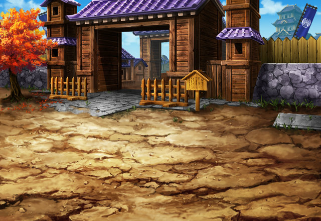
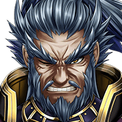
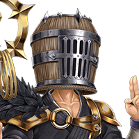

カゲヌイ
スズネ姫の命が大事なら、 刀を置いてもらおう……！
カゲヌイ
シノビとしては、 褒め言葉として受け取っておこう。


ゲンバ
フン…… 余計なことを。
ゲンバ
だが、まあよい。 儂は姫を連れて、先に城に戻る。
ゲンバ
カゲ、貴様は残りの者たちを捕らえ、 あらためて儂の元へ連れてこい。
スズネ
Shou-chan様！ ティリス様！セリア様！
サクノシン
セリア師匠たちは、 なぜ縄で縛られているので…？
カゲヌイ
スズネ姫なら、 我が殿と一緒に城に向かっている。
カゲヌイ
姫が変に抵抗しない限り、 殿は決して粗略に扱ったりはせぬ。
サクノシン
ゲンバなど、野心に囚われた 野獣のような男であろう！
カゲヌイ
……………。 貴様……もう１度言ってみろ。
カゲヌイ
あの方は誰よりもこの国のこと、 そして、民のことを思っておられる！
カゲヌイ
でなければ、天武党に襲われ、 瀕死だった俺を助けてくれたりはしない！！
セリア
アンタみたいなのは、金で雇われている ものだとばかり思っていたわ。
カゲヌイ
……………。 チッ……貴様ら、逃げられると思うなよ。
カゲヌイ
お前たちの実力を知っている以上、 俺はもう油断などしない……。
ティリス
……どうしよう、 Shou-chan、セリア？
セリア
さすがに、ちょっとマズイ状況ね……。 なんとか隙が出来ればいいんだけど……。

謎の男
ここは引き受けた……。 ぬしらは早くスズネ姫を助けに行け！！
セリア
今を逃したら、 逃げるチャンスなんてもうないわよ！
セリア
ほら、Shou-chan！ あんたもさっさと行く！！
謎の男
カゲヌイ、 おぬしの相手は……このワシだ！